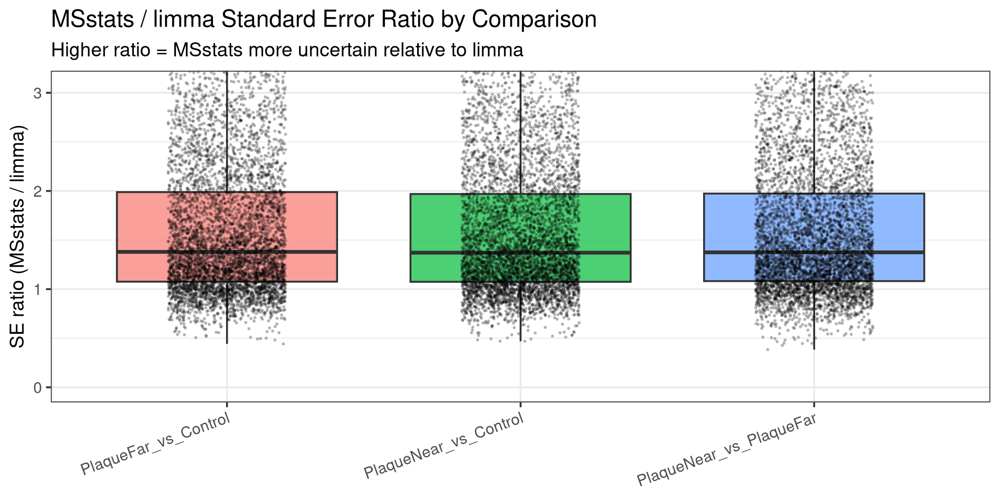
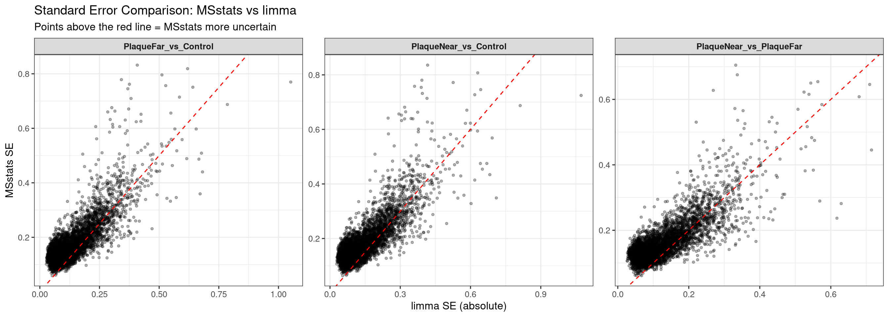
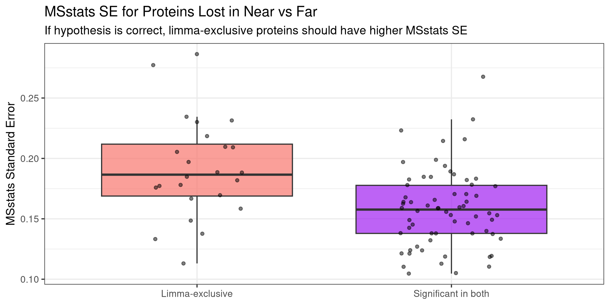
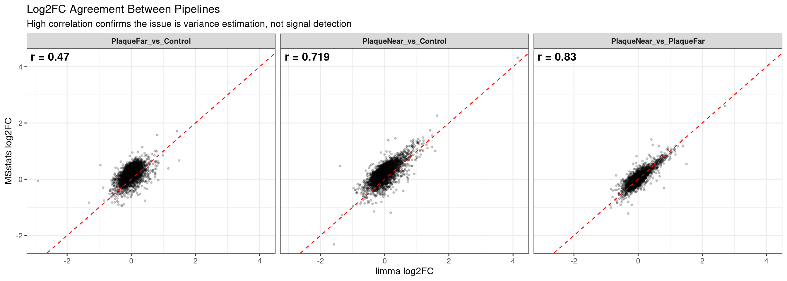
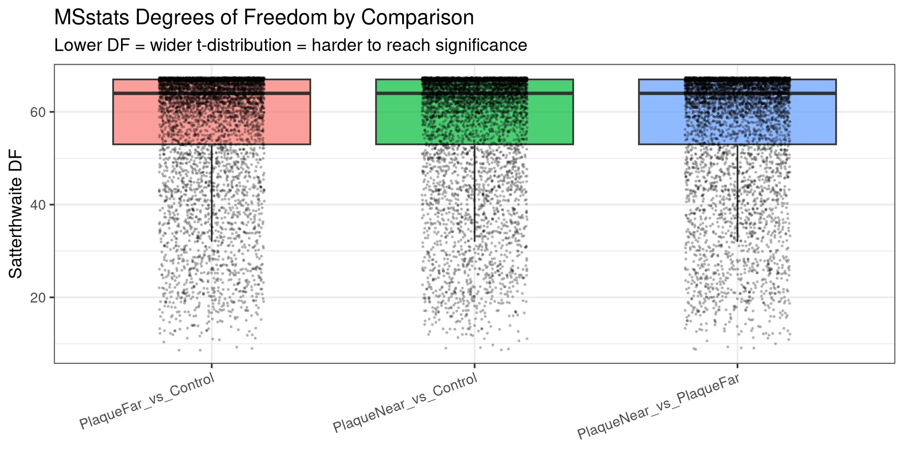

Code
suppressPackageStartupMessages({
library(data.table)
library(dplyr)
library(ggplot2)
library(tidyr)
library(stringr)
library(qs2)
})==================================================================
Author: Carlo Zanetti
This script tests the hypothesis that MSstats’ per-protein variance estimates are inflated for the Plaque Near vs Far comparison (where both groups are high-variance) relative to limma’s empirical Bayes moderated estimates, explaining why MSstats is more conservative for that specific comparison.
==================================================================
suppressPackageStartupMessages({
library(data.table)
library(dplyr)
library(ggplot2)
library(tidyr)
library(stringr)
library(qs2)
})base_dir <- "/nemo/lab/destrooperb/home/shared/zanettc/millie_proteomics"
run_num <- "run5"
results_dir <- file.path(base_dir, "results", run_num)
objects_dir <- file.path(base_dir, "data", "processed", run_num)
millie_dir <- file.path(base_dir, "data", "processed_millie")
graphs_dir <- file.path(results_dir, "concordance")
variance_dir <- file.path(graphs_dir, "variance_diagnostics")
dir.create(variance_dir, recursive = TRUE, showWarnings = FALSE)# MSstats full results (contains SE column)
res_df <- fread(file.path(results_dir, "Full_GroupComparison_Results.csv"))
# Limma results
millie_f_v_c <- read.csv(file.path(millie_dir, "limma_all_proteins_Plaque_far_vs_Control.csv"))
millie_n_v_c <- read.csv(file.path(millie_dir, "limma_all_proteins_Plaque_near_vs_Control.csv"))
millie_n_v_f <- read.csv(file.path(millie_dir, "limma_all_proteins_Plaque_near_vs_Far.csv"))
# Protein dictionary
clean_spec_raw <- fread(file.path(base_dir, "data/processed/run1/clean_spec_raw.csv"))
protein_dictionary <- clean_spec_raw %>%
dplyr::select(Protein = PG.ProteinGroups,
Gene = PG.Genes) %>%
distinct()The SE column in the MSstats output is the standard error of the log2FC estimate — this directly reflects the per-protein variance.
msstats_data <- res_df %>%
filter(!is.na(adj.pvalue), is.finite(log2FC)) %>%
left_join(protein_dictionary, by = "Protein") %>%
mutate(Gene = ifelse(is.na(Gene) | Gene == "", Protein, Gene)) %>%
dplyr::select(Gene, Protein, Label,
log2FC_msstats = log2FC,
SE_msstats = SE,
pvalue_msstats = pvalue,
adj.pvalue_msstats = adj.pvalue,
DF_msstats = DF)Limma’s t statistic and logFC let us back-calculate the effective SE: SE = logFC / t
limma_combined <- bind_rows(
millie_f_v_c %>% mutate(Label = "PlaqueFar_vs_Control"),
millie_n_v_c %>% mutate(Label = "PlaqueNear_vs_Control"),
millie_n_v_f %>% mutate(Label = "PlaqueNear_vs_PlaqueFar")
) %>%
mutate(
SE_limma = logFC / t
) %>%
dplyr::select(Gene, Label,
log2FC_limma = logFC,
SE_limma,
t_limma = t,
pvalue_limma = P.Value,
adj.pvalue_limma = adj.P.Val)merged <- msstats_data %>%
inner_join(limma_combined, by = c("Gene", "Label"))
cat("Merged proteins per comparison:\n")Merged proteins per comparison:as.data.frame(merged %>% dplyr::count(Label))If our hypothesis is correct, MSstats SE should be systematically higher for PlaqueNear_vs_PlaqueFar compared to the vs Control comparisons, while limma’s SE should be more stable.
se_summary <- merged %>%
group_by(Label) %>%
summarise(
median_SE_msstats = median(SE_msstats, na.rm = TRUE),
mean_SE_msstats = mean(SE_msstats, na.rm = TRUE),
median_SE_limma = median(SE_limma, na.rm = TRUE),
mean_SE_limma = mean(SE_limma, na.rm = TRUE),
# Ratio shows how much bigger MSstats SE is relative to limma
median_SE_ratio = median(SE_msstats / abs(SE_limma), na.rm = TRUE),
.groups = "drop"
)
as.data.frame(se_summary)The SE ratio (MSstats SE / limma SE) should be higher for Near vs Far if MSstats variance is specifically inflated for that comparison.
merged <- merged %>%
mutate(SE_ratio = SE_msstats / abs(SE_limma))
p_se_ratio <- ggplot(merged, aes(x = Label, y = SE_ratio, fill = Label)) +
geom_boxplot(outlier.shape = NA, alpha = 0.7) +
geom_jitter(width = 0.2, size = 0.3, alpha = 0.2) +
coord_cartesian(ylim = c(0, quantile(merged$SE_ratio, 0.95, na.rm = TRUE))) +
theme_bw(base_size = 14) +
labs(
title = "MSstats / limma Standard Error Ratio by Comparison",
subtitle = "Higher ratio = MSstats more uncertain relative to limma",
x = NULL,
y = "SE ratio (MSstats / limma)"
) +
theme(legend.position = "none",
axis.text.x = element_text(angle = 20, hjust = 1))
print(p_se_ratio)Warning: Removed 3 rows containing non-finite outside the scale range
(`stat_boxplot()`).Warning: Removed 3 rows containing missing values or values outside the scale range
(`geom_point()`).
ggsave(file.path(variance_dir, "SE_ratio_by_comparison.pdf"),
plot = p_se_ratio, width = 10, height = 5)Warning: Removed 3 rows containing non-finite outside the scale range
(`stat_boxplot()`).
Removed 3 rows containing missing values or values outside the scale range
(`geom_point()`).nf_ratios <- merged %>% filter(Label == "PlaqueNear_vs_PlaqueFar") %>% pull(SE_ratio)
nc_ratios <- merged %>% filter(Label == "PlaqueNear_vs_Control") %>% pull(SE_ratio)
fc_ratios <- merged %>% filter(Label == "PlaqueFar_vs_Control") %>% pull(SE_ratio)
cat("Near vs Far median SE ratio:", round(median(nf_ratios, na.rm = TRUE), 3), "\n")Near vs Far median SE ratio: 1.375 cat("Near vs Ctrl median SE ratio:", round(median(nc_ratios, na.rm = TRUE), 3), "\n")Near vs Ctrl median SE ratio: 1.371 cat("Far vs Ctrl median SE ratio:", round(median(fc_ratios, na.rm = TRUE), 3), "\n\n")Far vs Ctrl median SE ratio: 1.379 # Wilcoxon tests
cat("Near vs Far vs Near vs Control:\n")Near vs Far vs Near vs Control:print(wilcox.test(nf_ratios, nc_ratios, alternative = "greater"))
Wilcoxon rank sum test with continuity correction
data: nf_ratios and nc_ratios
W = 15214343, p-value = 0.236
alternative hypothesis: true location shift is greater than 0cat("\nNear vs Far vs Far vs Control:\n")
Near vs Far vs Far vs Control:print(wilcox.test(nf_ratios, fc_ratios, alternative = "greater"))
Wilcoxon rank sum test with continuity correction
data: nf_ratios and fc_ratios
W = 15094009, p-value = 0.5018
alternative hypothesis: true location shift is greater than 0Points should fall closer to the diagonal for vs Control comparisons and above it (MSstats > limma) for Near vs Far.
p_se_scatter <- ggplot(merged, aes(x = abs(SE_limma), y = SE_msstats)) +
geom_point(alpha = 0.3, size = 1) +
geom_abline(slope = 1, intercept = 0, color = "red", linetype = "dashed") +
facet_wrap(~ Label, scales = "free") +
theme_bw(base_size = 12) +
labs(
title = "Standard Error Comparison: MSstats vs limma",
subtitle = "Points above the red line = MSstats more uncertain",
x = "limma SE (absolute)",
y = "MSstats SE"
) +
theme(strip.text = element_text(face = "bold"))
print(p_se_scatter)Warning: Removed 3 rows containing missing values or values outside the scale range
(`geom_point()`).
ggsave(file.path(variance_dir, "SE_scatter_by_comparison.pdf"),
plot = p_se_scatter, width = 14, height = 5)Warning: Removed 3 rows containing missing values or values outside the scale range
(`geom_point()`).For the Near vs Far comparison, compare SE distributions for proteins that are significant in both pipelines vs limma-exclusive (significant in limma, lost by MSstats).
nf_data <- merged %>%
filter(Label == "PlaqueNear_vs_PlaqueFar") %>%
mutate(
sig_msstats = adj.pvalue_msstats < 0.05 & abs(log2FC_msstats) > 0.5,
sig_limma = adj.pvalue_limma < 0.05 & abs(log2FC_limma) > 0.5,
category = case_when(
sig_msstats & sig_limma ~ "Significant in both",
!sig_msstats & sig_limma ~ "Limma-exclusive",
sig_msstats & !sig_limma ~ "MSstats-exclusive",
TRUE ~ "Not significant"
)
)
# Focus on the informative comparison
plot_cats <- c("Significant in both", "Limma-exclusive")
p_lost <- ggplot(nf_data %>% filter(category %in% plot_cats),
aes(x = category, y = SE_msstats, fill = category)) +
geom_boxplot(outlier.shape = NA, alpha = 0.7) +
geom_jitter(width = 0.2, size = 1.5, alpha = 0.5) +
theme_bw(base_size = 14) +
scale_fill_manual(values = c("Significant in both" = "purple",
"Limma-exclusive" = "#F8766D")) +
labs(
title = "MSstats SE for Proteins Lost in Near vs Far",
subtitle = "If hypothesis is correct, limma-exclusive proteins should have higher MSstats SE",
x = NULL,
y = "MSstats Standard Error"
) +
theme(legend.position = "none")
print(p_lost)
ggsave(file.path(variance_dir, "SE_lost_proteins_near_vs_far.pdf"),
plot = p_lost, width = 8, height = 5)
# Formal test
cat("Wilcoxon test: limma-exclusive vs both-significant MSstats SE\n")Wilcoxon test: limma-exclusive vs both-significant MSstats SEboth_se <- nf_data %>% filter(category == "Significant in both") %>% pull(SE_msstats)
lost_se <- nf_data %>% filter(category == "Limma-exclusive") %>% pull(SE_msstats)
print(wilcox.test(lost_se, both_se, alternative = "greater"))
Wilcoxon rank sum test with continuity correction
data: lost_se and both_se
W = 1182, p-value = 0.0001898
alternative hypothesis: true location shift is greater than 0If the issue is purely variance estimation, the log2FC values should still correlate well between pipelines even for Near vs Far.
cors <- merged %>%
group_by(Label) %>%
summarise(
pearson_r = round(cor(log2FC_msstats, log2FC_limma, use = "complete.obs"), 3),
.groups = "drop"
)
p_fc <- ggplot(merged, aes(x = log2FC_limma, y = log2FC_msstats)) +
geom_point(alpha = 0.2, size = 0.8) +
geom_abline(slope = 1, intercept = 0, color = "red", linetype = "dashed") +
facet_wrap(~ Label) +
geom_text(data = cors, aes(label = paste0("r = ", pearson_r)),
x = -Inf, y = Inf, hjust = -0.1, vjust = 1.5,
size = 5, fontface = "bold", inherit.aes = FALSE) +
theme_bw(base_size = 12) +
labs(
title = "Log2FC Agreement Between Pipelines",
subtitle = "High correlation confirms the issue is variance estimation, not signal detection",
x = "limma log2FC",
y = "MSstats log2FC"
) +
theme(strip.text = element_text(face = "bold"))
print(p_fc)Warning: Removed 3 rows containing missing values or values outside the scale range
(`geom_point()`).
ggsave(file.path(variance_dir, "FC_correlation_by_comparison.pdf"),
plot = p_fc, width = 14, height = 5)Warning: Removed 3 rows containing missing values or values outside the scale range
(`geom_point()`).as.data.frame(cors)Lower DF in MSstats means fewer effective observations, which inflates the t-distribution tails and makes it harder to reach significance.
p_df <- ggplot(merged, aes(x = Label, y = DF_msstats, fill = Label)) +
geom_boxplot(outlier.shape = NA, alpha = 0.7) +
geom_jitter(width = 0.2, size = 0.3, alpha = 0.2) +
theme_bw(base_size = 14) +
labs(
title = "MSstats Degrees of Freedom by Comparison",
subtitle = "Lower DF = wider t-distribution = harder to reach significance",
x = NULL,
y = "Satterthwaite DF"
) +
theme(legend.position = "none",
axis.text.x = element_text(angle = 20, hjust = 1))
print(p_df)
ggsave(file.path(variance_dir, "DF_by_comparison.pdf"),
plot = p_df, width = 10, height = 5)
# Summary
merged %>%
group_by(Label) %>%
summarise(
median_DF = median(DF_msstats, na.rm = TRUE),
mean_DF = round(mean(DF_msstats, na.rm = TRUE), 1),
.groups = "drop"
) %>%
as.data.frame()cat("=== Variance Diagnostic Summary ===\n\n")=== Variance Diagnostic Summary ===cat("If the hypothesis holds, you should see:\n")If the hypothesis holds, you should see:cat("1. SE ratio (MSstats/limma) higher for Near vs Far than vs Control comparisons\n")1. SE ratio (MSstats/limma) higher for Near vs Far than vs Control comparisonscat("2. SE scatter: points above diagonal specifically for Near vs Far\n")2. SE scatter: points above diagonal specifically for Near vs Farcat("3. Limma-exclusive proteins have higher MSstats SE than both-significant proteins\n")3. Limma-exclusive proteins have higher MSstats SE than both-significant proteinscat("4. Log2FC correlations remain high across all comparisons\n")4. Log2FC correlations remain high across all comparisonscat("5. DF may be lower for Near vs Far if more features are missing\n\n")5. DF may be lower for Near vs Far if more features are missingcat("All plots saved to:", variance_dir, "\n")All plots saved to: /nemo/lab/destrooperb/home/shared/zanettc/millie_proteomics/results/run5/concordance/variance_diagnostics